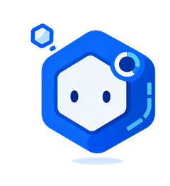
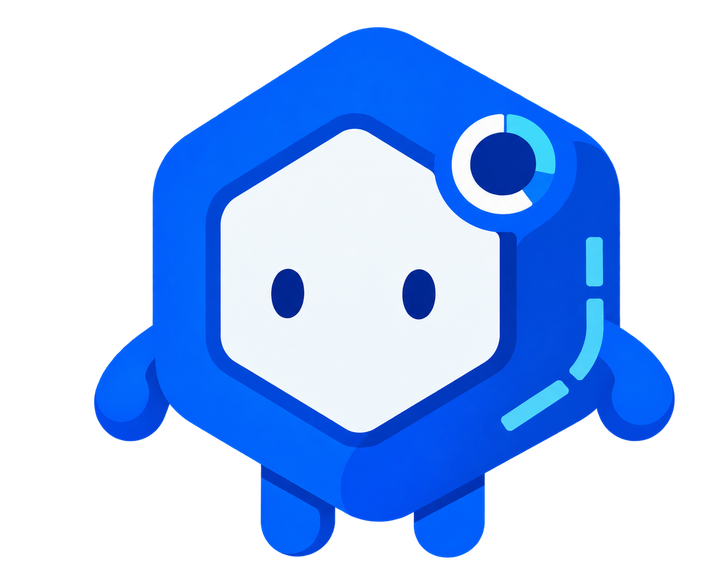
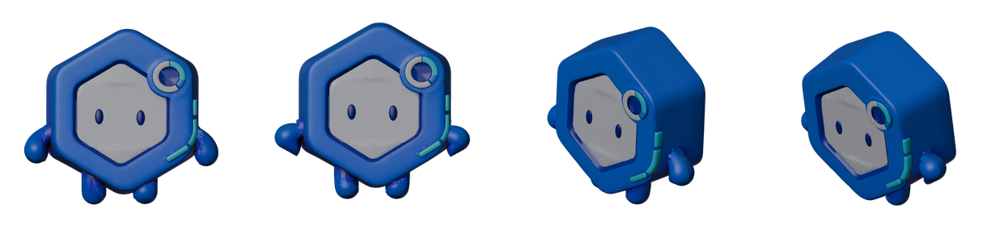

Seungwoo Moon
구조는 제가 설계하고 AI는 그 안에서만 실행합니다.
GitHub, LinkedIn, lunar4uni2cosmos@gmail.com
Codepresso의 AI R&D 팀에서 11개월간 일하며 문제 상황을 정의하고 해결하는 방식은 항상 같았습니다. 무엇을 자동화할지 설계하고 언제 사람의 판단이 필요할지 구상했습니다.
코딩 학습 플랫폼 검수 자동화
78개 트랙과 약 7천 개 학습 task를 가진 IT 학습 플랫폼의 콘텐츠 QA를 총괄했습니다. 입사 초에는 트랙을 직접 읽고 고치는 수동 검수로 결함의 유형을 익혔고, 그 방법을 12종의 재사용 스킬로 체계화해 콘텐츠 생성기에도 이식했습니다. 10월에는 실제 학습자처럼 플랫폼에 접속해 학습하는 QA 에이전트를 만들어 서비스 안에 탑재하고 운영 안정화를 함께 맡았습니다. 커밋 수는 콘텐츠 저장소와 플랫폼 저장소를 합산한 값입니다.
수동 검수로 결함의 유형을 익혔습니다
자동 검수를 다 통과한 트랙이 사실은 학습이 불가능한 구조였습니다
Linux 입문 트랙은 스키마와 정답 개수 같은 기계적 QA를 전부 통과했지만 직접 읽어보니 한 단원은 21개 task가 전부 읽기 자료이고 확인 퀴즈가 하나도 없었습니다. 어떤 자동 규칙에도 걸리지 않는 문제였습니다. 중복 실습 42건을 삭제하고 확인 없이 연속으로 읽어야 하는 구간의 길이를 기준으로 재진단해 신규 퀴즈 18건을 설계해 배치했습니다. 152개 task를 91개로 줄였다가 123개로 다시 채웠습니다. 단순 삭제가 아니라 무엇을 남기고 무엇을 새로 채울지 정하는 재설계였습니다.
같은 규칙을 돌려도 트랙의 결함 유형에 따라 검수 방식을 달리했습니다
데이터 분석 입문 트랙은 보이지 않는 외부 패널의 데이터가 있어야 풀 수 있는 문항이 27개 있었습니다. 해설, 보기, 인접 레슨에서 데이터를 복원해 지문에 넣었고, 14개 스킬 파일의 과제를 451개에서 387개로 정리하면서 자동 수정 200건과 수동 수정 49건을 기록으로 남겼습니다. 비개발자용 AI 교육 두 트랙은 레슨만으로 답을 찾을 수 있는지에 집중했고, 프롬프트 엔지니어링 트랙에서는 미처리 21건을 다시 조사해 6건만 실제로 고치고 15건은 기존 내용으로 풀 수 있음을 확인했습니다. 오류를 지우는 데서 멈추지 않고 빠진 개념도 채웠습니다. LLM API 입문 트랙은 스트리밍과 멀티턴 대화 관리가 아예 없어 5개 스킬 38개 과제를 9개 스킬 58개 과제로 확장했고, Vibe Coding 트랙은 실습이 없던 6개 스킬에 에이전트 실습을 추가해 실습을 8개에서 14개로 늘렸습니다.
검수 방법을 12종 스킬로 체계화하고 콘텐츠 생성기에 이식했습니다
트랙 하나의 오류를 저장소 전체 점검으로 확장하고 검수의 오탐도 바로잡았습니다
한 트랙에서 학습 경로 데이터가 실제 콘텐츠와 어긋난 것을 발견하고 조사를 저장소 전체 580개 파일 6,916개 task로 넓혔습니다. 서로 다른 두 트랙이 같은 task 식별자를 쓰고 있어 학습자 진행률 기록이 섞일 수 있는 문제 등을 찾아 모두 바로잡았고, 이때 쓴 검증 지표 10개를 어떤 작업이든 전후로 반드시 돌려보는 체크리스트로 문서에 고정했습니다. 입문 트랙의 코딩 과제가 중급에서 처음 가르치는 문법을 미리 요구하는 결함은 트랙 하나씩 보는 QA로는 잡을 수 없어, 과목의 모든 트랙을 학습 순서대로 이어 붙여 각 개념이 어디서 처음 가르쳐지고 어디서 쓰이는지 대조하는 검수 모델을 새로 만들었습니다. 이 검수의 첫 실행이 치명 등급 결함 20건을 보고했는데 본문과 대조하니 실제 결함은 4건이었습니다. 오탐률 80%라는 사실을 결과 문서 맨 위에 정정으로 밝힌 뒤 판정 기준을 고쳐 다시 검사했습니다.
사람이 뒤늦게 하던 QA를 콘텐츠 생성 직후의 단계로 옮겼습니다
제 PC에만 있던 12종 QA 스킬과 공유 규칙 문서를 git으로 공유하고 PR 리뷰를 받는 팀 자산으로 바꿨습니다. 같은 규칙을 별도 프로젝트인 콘텐츠 생성기에도 이식해, 생성기가 과제를 만들고 나면 Claude Agent SDK 세션이 그 실행의 결과 폴더만 읽어 검사하고 고치고 구조화된 보고를 남기는 선택형 QA 단계를 추가했습니다. 모호한 항목은 추정해서 바꾸지 않고 보고만 하게 했고, 기본값은 꺼짐으로 두었으며 QA가 실패해도 이미 성공한 생성 결과는 보존하도록 계약을 정했습니다.
실제 학습자처럼 움직이는 QA 에이전트를 플랫폼에 탑재하고 운영을 안정화했습니다
화면이 열리는지 확인하는 검사와 학습을 실제로 해보는 검수를 하나로 연결했습니다
Playwright 시나리오로 로그인, 대시보드, 학습 진입, 과제 풀이, 튜터, 다시보기를 점검하고, 그 위에 LLM이 학습 콘텐츠를 검토하는 검수를 얹었습니다. 객관식, 빈칸, 드롭다운, 매칭은 템플릿 정답으로 풀고 코드 과제는 정답 코드가 있으면 재사용하며 없으면 모델이 작성하게 해서, 템플릿 정답이 오답 처리되는 경우와 모델이 잘못 푼 경우를 구분했습니다. 검수 결과는 모델이 고른 판정이 아니라 발견 사항의 심각도로 다시 결정하게 했고, 스킬과 오류 종류를 기준으로 중복 제보를 한 이슈에 묶어 알림 소음을 줄였습니다. 관리자는 실시간 브라우저 화면, 스텝 타임라인, LLM 사용량을 보면서 학습할 트랙, 가동 시간대, 자동 종료를 지정할 수 있습니다. 개발 환경에서 한 실행이 남은 스킬 6개를 끝까지 학습하고 42개 과제를 건너뜀 없이 푼 기록이 있습니다.
학습자가 제보한 오류가 사람 손을 거치지 않고 검증된 수정 PR이 되게 했습니다
그전까지 학습자 제보는 사람이 읽고 원인을 찾고 일정을 잡아 고치는 흐름이라 접수에서 패치까지 오래 걸렸고, 그 사이 같은 오류를 겪는 학습자가 계속 생겼습니다. GitHub 이슈, Notion 접수 데이터베이스, 학습자 문의 화면을 같은 흐름에 연결해 제보가 들어오는 즉시 AI가 원인, 근거, 수정 방향을 구조화해 돌려주게 했습니다. 승인자가 지정 라벨을 붙이면 수정 브랜치에서 변경을 만든 뒤 깨끗한 검증 단계가 변경 범위를 검사하고 테스트를 돌리며, 통과하면 초안 PR을 열고 최종 검토와 병합만 사람이 맡습니다. 당시 검증에서 실제 테스트 결함을 4줄 수정과 923건 테스트 통과로 PR까지 만들었고, 같은 접수를 재실행해도 중복 이슈가 생기지 않는 것과 권한 밖 요청을 거절하는 것을 확인했습니다. 사람이 하던 분석과 수정 작성이 사라지면서 제보에서 패치까지 걸리는 시간이 크게 줄었고, 운영하면서 분석이 댓글의 보충 정보를 읽지 못하던 문제와 환경 설정에 의존한 테스트가 자동 수정을 막던 문제도 후속으로 고쳐 흐름을 유지했습니다.
콘텐츠가 맞아도 화면과 채점이 다른 기준을 쓰면 학습자는 풀 수 없습니다
설명용 테스트 입력이 표준 입력으로 흘러가 정상 풀이가 실패하던 문제를 명시적인 stdin만 실행기에 보내도록 고쳤고, 선택지 ID의 누락과 중복은 화면과 평가기가 같은 공용 규칙을 쓰게 했습니다. 빈칸 65건에서는 임의 변수명이 정답 조건이 되지 않도록 이름을 템플릿에 고정하거나 지문에 명시했고, LLM 비용은 공급자마다 다른 캐시 사용량 의미를 통일해 단가 버전과 함께 기록하게 했습니다.
사람이 하던 검수가 스킬이 되고, 스킬이 생성기와 플랫폼 안의 에이전트가 됐습니다. 학습자 제보가 검증된 수정 PR로 바로 이어지면서 부서의 패치 속도가 이전과 비교할 수 없이 빨라졌고, 에이전트의 발견도 같은 승인 흐름으로 들어가 해결된 결함이 다시 나타나면 이슈가 재개방됩니다. 자동으로 열리는 PR은 AI가 만든 제안이며 사람의 검토를 전제로 설계했고, 운영 지식은 한국어와 영어 인수인계 문서로 팀에 남겼습니다.
Claude Agent SDK, Playwright, FastAPI, pytest, GitHub Actions, Notion API
3D 렌더 모델 비교 평가
렌티큘러 인쇄물을 제작하는 외부 고객사가 공정에 쓸 표준 3D 생성 모델을 고르는 과제였습니다. 처음으로 외부 고객사를 위해 진행한 프로젝트였고 무엇을 어떤 방법으로 검증할지 정하는 기획부터 구현, 보고까지 맡았습니다. 고객사가 준 공통 이미지 10장으로 생성 모델 5개를 비교했고 결과 50건을 각각 45개 시점에서 렌더링한 2,250장을 정량 평가했습니다. 결과는 보고서와 고객사가 반복해서 쓸 수 있는 도구로 납품했습니다.
육안 비교로 끝내지 않고 정량 지표 다섯 가지를 조사해 도입했습니다
고객사가 비개발 직군인 예술 분야 기업이었지만 모델 결과를 단순 나열해 판단시키는 평가는 무책임하다고 생각했습니다. 시각 유사도를 다루는 논문들을 조사해 실루엣 겹침, 구조 유사도, 신호 대 잡음비, 색차, 지각 유사도 다섯 가지 지표를 선정하고 각 수식을 스크립트로 구현해 정량평가 했습니다. 평가 방식은 고객사의 공정에 맞췄습니다. 특수 액자에 45시점 이미지가 필요하다는 배경을 기억해, 생성된 3D 데이터를 45시점 회전해 렌더링하고 유사도 점수가 가장 높은 시점을 대표 채택하는 방식을 설계했습니다.
구도 차이가 모델 품질 점수에 섞이는 것을 발견하고 평가를 세 단계로 고쳤습니다
인물의 흉상 이미지를 입력해도 일부 모델은 전신을 생성했고 얼굴 비중이 달라져서 구도 차이가 점수에 반영됐습니다. 오픈소스 안면 인식 모델을 전처리 스크립트에 포함해 평가 환경의 변인을 통제했습니다. 이후의 수치 변화는 모델 성능이 아니라 평가 조건이 바뀐 결과라고 보고서에 명시했고 세 단계의 원자료를 모두 남겨 해석을 추적할 수 있게 했습니다. 보고서의 표와 서술 수치는 평가 원자료에서 빌드할 때 계산되게 만들었습니다. 추가해야 할 모델 데이터가 미팅 직전에 추가됐을 때 동일 평가를 진행해 반영했습니다.
고객사가 직접 지속 운영할 수 있는 방식의 자산을 제작해 전달했습니다
고객사가 요청한 것은 45시점 추출과 평가 스크립트까지였습니다. 그렇지만 비개발 직군의 고객사가 직접 활용하기 어려울 것 같아 요청에 없던 GUI를 추가로 구상했습니다. 데이터 정리, 45시점 렌더, 지표 계산, 리포트 생성 스크립트를 하나로 연결한 뒤 더블클릭으로 인터페이스를 실행하는 배치 파일을 제공했습니다. 새 데이터를 등록하면 새로 평가를 실행해 보고서를 갱신하도록 했습니다.
다섯 지표 모두에서 1위 또는 2위이면서 입력 구도를 유지하는 모델을 표준으로 제안했습니다. 비용이 우선인 물량에는 크롭 보정과 예외 검수를 전제로 한 대안 모델을 함께 제시했고 생성 대기 시간, 플랜 처리량, 삼각형 메시의 경량화 필요성까지 운영 조건으로 정리했습니다.
Blender, Unreal Engine, OpenCV YuNet, RunPod, Hi3D, Tripo3D, Meshy, TRELLIS, VARCO
블로그 콘텐츠 제작 서비스
Notion에 정리한 원본 자료에서 블로그 글, 삽화, 링크드인 포스트를 만들어내는 사내 콘텐츠 도구입니다. 서비스의 백엔드 전체를 처음으로 맡아 스크립트 한 개짜리 프로토타입을 마케팅팀이 매일 쓰는 서비스로 키웠습니다.
순차적으로만 돌던 흐름을 읽고 병렬화 구조로 다시 설계했습니다
블로그 콘텐츠는 본문 작성, 이미지 제작, 본문 검수, AI 문체 제거, 링크드인 작성, 링크드인 이미지 제작 순서로 한 단계씩 진행되는 구조였습니다. 동료가 먼저 만들어 둔 흐름 위에서 일하는 것이 처음이라 코드를 모두 읽어 보았습니다. 검수를 두 번 거치면 본문이 달라지므로 지금은 없거나 바뀐 내용을 그린 그림이 나올 수 있다고 판단해 이미지 제작을 문체 제거 뒤로 옮겼습니다. 링크드인 작업들은 출력 파일이 달라 기다릴 이유가 없어 비동기 함수로 고쳤습니다. 예상대로 작동했고 콘텐츠 한 편을 만드는 총 시간이 절반 가까이 줄었습니다.
그림에서 제목만 바꿀 수 있도록 두 객체를 분리했습니다
마케팅팀이 도구를 쓰면서 그림은 마음에 들어 그대로 두고 제목 글씨만 고치고 싶다는 의견을 공유했습니다. 당시 구조로는 글씨 하나를 고치려 해도 이미지 한 장을 통째로 다시 만들어야 했고 마음에 들던 그림까지 함께 바뀌어 버렸습니다. 그림과 제목을 따로 만들어 합치는 구조로 바꿔서 제목만 다시 만들거나 지우거나 위치와 크기를 옮기는 일이 그림을 건드리지 않고 가능해졌습니다. 위치와 크기 조정은 이미 있는 레이어를 다시 합치는 연산이라 추가 생성 비용이 0이고 1초 안에 끝납니다. 글씨를 새로 만들 때는 완성된 배경을 먼저 분석해 잉크 색을 정하고 대비를 검사하며, 대비가 모자라면 다시 생성하고 계속 실패하면 고정 렌더링으로 돌아가게 했습니다. 글씨 스타일 프리셋 5종은 생성 전과 생성 후 어느 쪽에서도 고를 수 있게 연결했습니다.
생성 기능보다 먼저 끊기는 연결과 겹치는 저장을 잡았습니다
본문 한 편을 만드는 동안 모델 응답을 기다리는 구간에는 보내는 데이터가 없어 브라우저 연결이 먼저 끊겼습니다. 단계마다 주기적인 SSE heartbeat를 넣어 연결을 유지하고, 반대로 사용자가 창을 닫은 뒤에도 유료 백그라운드 작업이 계속 돌던 경우는 연결 상태를 확인해 취소하도록 했습니다. 동기 클라우드 호출이 다른 요청의 이벤트 루프를 막던 문제는 호출을 루프 밖으로 옮겨 풀었고, 섹션을 병렬로 쓰면서 같은 체크포인트를 서로 덮어쓰던 문제는 문맥별 저장을 직렬화하고 저장 직전에 최신 상태를 병합하는 방식으로 고쳤습니다. 8개 스레드가 동시에 저장해도 유실이 없는 것을 확인했습니다. 저장 과정에서 비용 메타데이터가 사라져 0원으로 보이던 집계 오류도 이때 함께 바로잡았습니다.
마케팅팀의 표준 콘텐츠 제작 워크플로우 도구로 정착했습니다. 결과 화면 주소 하나만 보내면 모든 후보 이미지, 설정, 생성 기록을 한 화면에서 검토할 수 있어 파일을 하나씩 주고받던 과정도 사라졌습니다. 생성 시도별 실행 로그를 키 마스킹과 함께 저장하고 관리자 화면에서 본문, 이미지, 입력 설정, 검수 기록을 묶어 내려받게 한 진단 경로 덕분에 클라우드 콘솔에 들어가지 않고도 문제를 재현할 수 있습니다. 실제로 6월부터 이 파이프라인으로 제작된 글과 그림이 Codepresso 블로그에 게시되고 있습니다.
FastAPI, DynamoDB, S3, Terraform, Docker, Claude, OpenAI, Gemini
모션 그래픽 영상 제작 서비스
스킬 JSON 하나로 한국어 내레이션 영상을 자동 생성하는 사내 도구입니다. 스크립트 한 개짜리 프로토타입으로 시작해 애니메이션 엔진 4개, 에이전트 런타임 3개, LLM 프로바이더 5개를 지원하는 규모로 키웠고 비개발자 팀원 PC에 오프라인 Docker 번들로 설치되고 업데이트되는 프로덕션 도구로 다듬었습니다.
TTS가 한국어 숫자와 영어 단어를 계속 틀리게 읽었습니다
화면 자막용 대본과 별개로 TTS에만 들어가는 발음 전용 스크립트를 만드는 전처리 단계를 파이프라인에 추가했습니다. 엔진이 틀릴 때마다 발음 사전에 항목을 손으로 누적했고 정규식 전처리와 국어 음운 규칙 요약 문서까지 세 층으로 쌓았습니다. "5.0"은 표준 발음인 "오쩜영" 대신 일부러 "오쩜녕"으로 등록했습니다. 문법적으로 옳은 표기보다 스피커에서 실제로 정확하게 나오는 소리를 우선한 결정이었습니다.
영상 하나가 묶여 있는 구조를 쪼갰습니다
단일 에이전트가 영상 전체를 처음부터 끝까지 한 번에 작성하던 구조라 중간에 실패하면 그때까지의 작업이 통째로 사라졌습니다. 씬 구성을 먼저 설계해 빈 씬 자리만 잡은 골격 파일을 저장해두고 각 씬의 내용은 씬별 서브에이전트가 병렬로 채우는 구조로 재설계했습니다. 소요 시간과 비용이 줄었고 실패해도 잃는 범위가 영상 전체에서 씬 하나로 좁아졌습니다. 끊긴 세션도 다음 빈 씬부터 이어서 작업할 수 있게 되었습니다.
파이프라인의 주요 기준값을 측정해 수정했습니다
대본 길이에서 영상 길이를 추정하는 TTS 속도 기준값을 실제 합성 결과 99건으로 다시 재서 인트로가 매번 21% 길어지던 문제를 바로잡았습니다. 렌더에 걸리는 시간도 실제로 완성해 내보낸 영상 118건을 재서 영상 길이의 1.8배라는 기준을 얻었습니다. 덕분에 4분이 넘는 영상이 렌더 도중 잘렸는데도 완성으로 보고되던 문제를 찾았고 완성된 영상의 길이를 대본에 선언된 길이와 대조하는 검증을 추가했습니다. 렌더 자체는 Playwright로 30fps의 결정적 프레임을 캡처하고 FFmpeg로 음성과 결합해 MP4, WebM, MOV로 내보내는 구조라, 같은 입력이면 같은 프레임이 나오는지도 검사에 포함했습니다.
에이전트에게 전부 맡기지 않고 초안과 승인 사이에 사람을 두었습니다
초기화, 대본 저장, 음성, 자막, 합성, 비용 계산처럼 결과가 정해져 있는 단계는 기존 함수를 그대로 CLI 명령으로 노출하고, 대본과 장면 설계만 에이전트가 맡게 역할을 나눴습니다. 브라우저에서 에이전트가 초안을 만들면 사용자가 검토하고, 승인하면 같은 세션을 재개해 생성과 렌더를 이어가도록 연결했습니다. Claude 기반 실행에 이어 Codex 기반 실행과 브라우저 로그인을 붙이면서 도구 실행 허용 범위와 승인 시점의 상태 복원을 확인했고, 에이전트가 스스로 말한 모델명은 비용과 결과의 근거로 쓰지 않도록 실제 실행 모델을 따로 식별하게 했습니다.
작은 수정에도 1.4GB를 다시 보내던 배포를 3.4MB 업데이트로 바꿨습니다
비개발자 팀원의 PC에 오프라인으로 설치되는 도구라 수정이 있을 때마다 전체 설치 파일을 다시 전달하고 새 폴더에 설치해야 했습니다. Python, Node, 브라우저, 영상 인코더 같은 런타임과 앱 소스를 서로 다른 이미지 레이어로 나누고, 업데이트 번들에는 소스 레이어만 담아 기존 이미지 위에 오프라인으로 빌드하게 했습니다. 당시 측정으로 전체 설치 ZIP 1,473,843,315바이트가 업데이트 ZIP 3,420,998바이트가 되어 약 99.8% 줄었습니다. 의존성이 바뀐 릴리스는 업데이트를 거부하고 전체 설치를 요구하며, 실패하면 이전 이미지로 돌아가고, 생성 작업이 실행 중이면 업데이트가 들어가지 않게 했습니다. 유지보수자가 손으로 만들던 번들은 GitHub Actions와 Releases로 옮기고 설치, 업데이트, 유지보수 담당자별 문서를 따로 썼습니다.
영상이 필요할 때마다 외주 제작사를 섭외하던 프로세스가 사라졌습니다. 비개발자용 셀프서비스 웹 UI와 오프라인 설치 번들까지 다듬은 결과 지금은 운영팀이 사내 IT 학습 플랫폼을 비롯한 여러 서비스의 소개 영상을 엔지니어 개입 없이 직접 제작합니다. 대표작인 AI 역량 평가 서비스 소개 영상(67초)은 5주간 42회 렌더의 사업팀 피드백 루프를 거쳐 대외 세일즈 자산으로 전달됐습니다.
Flask, Claude Agent SDK, Codex, OpenAI Agents SDK, Google ADK, HyperFrames, Playwright, FFmpeg, ElevenLabs, Docker, GitHub Actions
회사 마스코트 캐릭터 디자인
위 영상 도구는 사람을 그릴 때마다 막대인간을 그렸습니다. LLM에게 더 잘 그리라고 지시하는 대신 게임 캐릭터처럼 명령으로 조작하는 리그 자산을 만들어 불러오게 하는 방식으로 문제를 다시 정의했습니다. 회사 홈페이지의 육각형 로고 형태를 가져오고 페이지 CSS에서 주 색상 값을 추출했습니다. 이미지 생성 AI에 프롬프트를 반복해 합체 상태와 관절 단위로 분해된 상태의 에셋을 만들어 리깅했습니다. 마스코트는 도구 안에 머물지 않고 사내 챗 이모지와 마케팅 홍보 영상에 쓰이는 회사의 캐릭터가 됐습니다.
이미지 생성 AI로 만든 합체 원화

도구의 부품으로 만든 캐릭터가 회사의 캐릭터로 자리 잡았습니다
사내 챗 이모지로 등록돼 쓰이고 있습니다. 챗에서 이모지는 글자 사이나 메시지 하단의 반응으로 아주 작게 표시되기 때문에 팔다리까지 넣으면 형태가 뭉개진다고 판단해 육각형 얼굴만 남기고 배경을 제거했습니다. 마케팅팀은 이 캐릭터를 홍보 영상에 채택해 쓰고 있습니다. 저는 팀원들의 생일마다 각자의 성격을 담은 소품과 의상을 입힌 캐릭터 변형본을 만들어 선물했습니다.
2D 리그에 이어 3D 모델에도 뼈대와 표정을 붙였습니다
같은 캐릭터를 이미지 기반 3D 생성 모델로 만든 정적 GLB에 Blender 스크립트로 본 10개를 심고, 걷기, 달리기, 점프와 기쁨, 슬픔, 화남, 놀람 네 가지 몸짓, 눈만 움직이는 표정 클립 5종을 붙였습니다. 입이 없는 캐릭터라 표정은 눈의 크기와 기울기로만 만들었고, 기쁨 표정의 ^^ 아치는 평소 몸통 안에 숨어 있다가 앞으로 나오는 별도 메시로 추가했습니다. 몸 클립과 표정 클립이 서로 다른 뼈만 움직이게 나눠 걷는 중에도 표정이 유지되며, 생성 모델이 남긴 텍스처 자국은 주변 정점 색을 거리 가중 평균해 지우는 전처리로 정리했습니다. 비개발자도 더블클릭 한 번으로 브라우저에서 키보드로 조작해 볼 수 있는 뷰어와, 원본 83MB 모델을 7MB로 줄인 웹용 버전, Unity와 Unreal에 그대로 들어가는 원본 해상도 버전을 함께 전달했습니다.

영상이 이상하게 나오는 문제를 고치려고 만든 자산이 사내 이모지, 홍보 영상, 팀 문화까지 쓰이는 회사의 캐릭터가 됐습니다.
캐릭터 디자인, Parametric SVG 리그, Blender, glTF, three.js
개발자 역량 평가 일본어 검수
코딩 테스트를 포함한 채용용 개발자 역량 평가 플랫폼의 73개 트랙 평가 콘텐츠 번역 품질을 검수했습니다.
번역 검수를 사람, 계약, 환경까지 포함한 파이프라인으로 운영했습니다
341개 task를 실제 스테이징 화면에서 하나씩 열어 검수하는 동시에 문법과 자연스러움을 보는 전문 번역가와 실무 용어를 보는 일본 현지 개발자로 나눈 이중 검수 체계를 만들었습니다. 배치 범위 확정, 단가 협의, 외주 계약서 작성, Notion 작업 공간 세팅까지 운영 전 과정을 직접 챙겼습니다.
검수자 피드백을 흘려보내지 않고 번역 모듈 개선에 다시 썼습니다
검수자들의 교정 내용을 전부 CSV로 누적해 반복해서 지적되는 패턴을 뽑아내고 이를 용어 사전과 번역 지침 문서로 정리해 번역 모듈에 제공했습니다. 번역 성능이 실제로 크게 개선됐고 이 용어 사전 방식은 위 영상 파이프라인의 발음 문제를 풀 때도 그대로 다시 썼습니다.
직접 만든 자동화 도구를 스스로 내려놨습니다
CSV에서 URL을 조합해 탭을 옮겨 다니는 병목을 없애려고 Playwright 자동화와 Flask 컨트롤 패널을 직접 만들었습니다. 하지만 로그인 세션 안정성이 검수 신뢰도를 오히려 떨어뜨린다고 판단되자 수동 검수로 되돌렸습니다. 도구는 품질을 보장하기 위한 수단이라는 우선순위를 지킨 결정입니다. 히라가나도 모르는 상태로 시작한 업무였기에 5월부터 일본어를 직접 학습했습니다. 콘텐츠의 문장 구조와 검수자 인사이트 문서를 스스로 읽으며 작업할 수 있게 되었습니다.
Playwright, Flask, Notion, Google Sheets, 외주 검수 파이프라인 설계